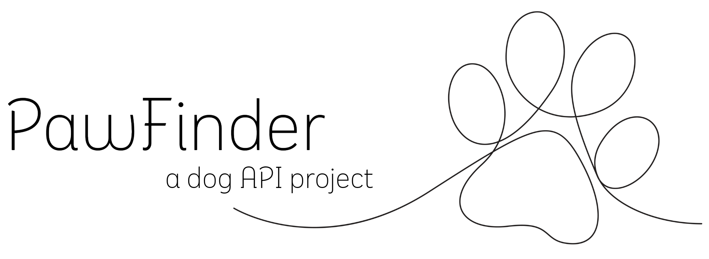

My dogs - Jack Russell Terriers
Ginny
Ginny was a shorty Jack Russell Terrier.

Mindy
Mindy was a long legged Jack Russell Terrier.
Oakley
Oakley was a long legged Jack Russell Terrier.
Jack Russell Terrier
The Jack Russell Terrier is a small and energetic breed related to the Parson Russell Terrier and the Russell Terrier. They come in long legged and short legged varieties, with variations in coat length, from smooth to rough coats.